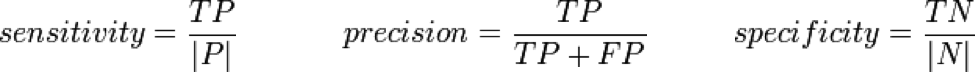
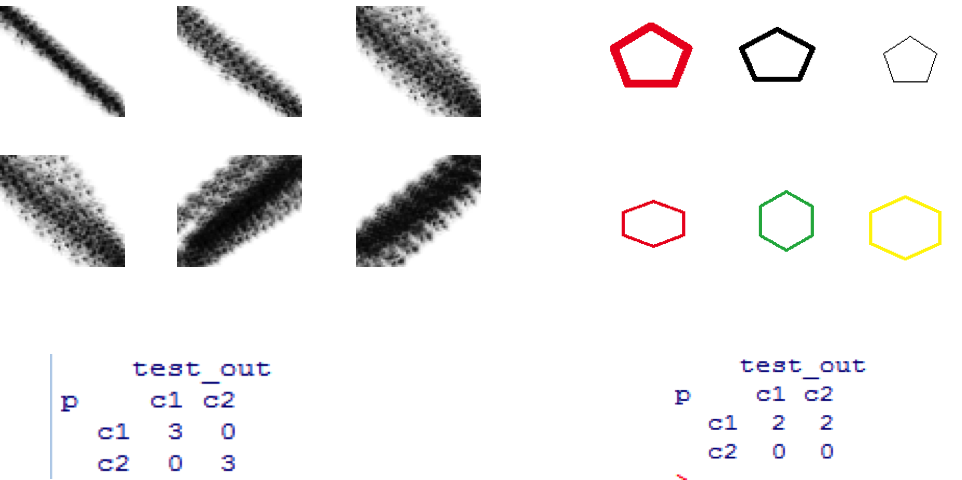
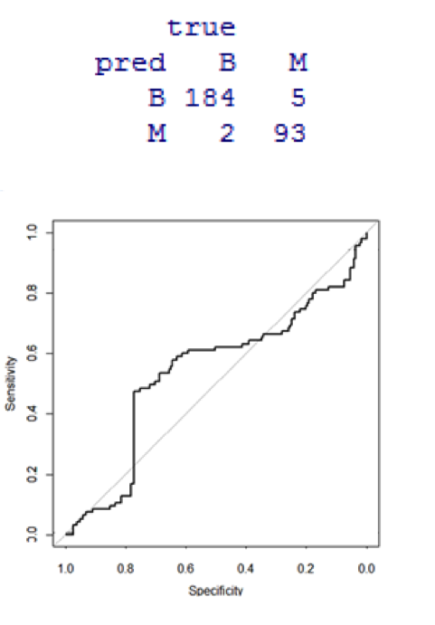
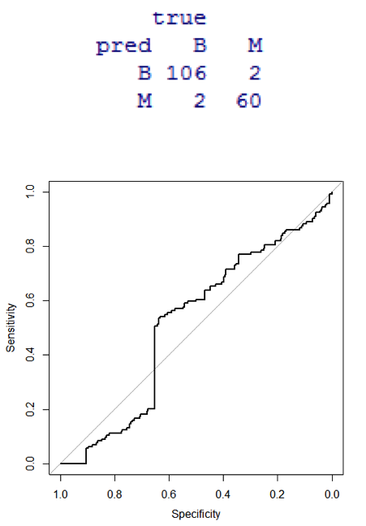
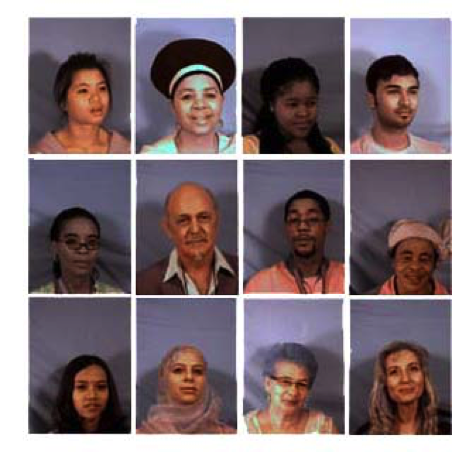
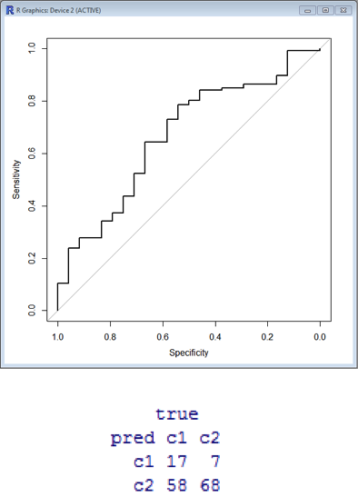
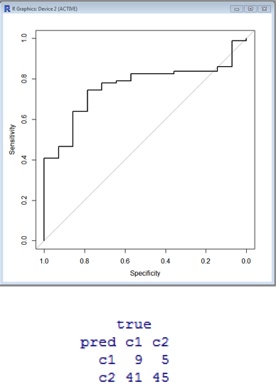

CS5310 - Computer Graphics
Ramesh, Raghuveer & Shukla, Kartikeya
Understanding Support Vector Machines and its application in Feature Detection
Abstract
In machine learning quite often, one encounters decision making scenarios wherein prior knowledge is used to analyze unknown data to arrive at logical conclusions. This study explores one such learning technique to analyze a set of inputs to predict the outcomes with the help of a learning model, Support Vector Machine. A study of the technique was followed by implementation, using R.
Introduction
Support vector machines (SVM) are learning models which are primarily used in machine learning to solve classification problems. A typical SVM implementation consists of a training phase followed by a prediction phase.
Typically, the training data is classified to belong to one of the categories (classes) a using a training algorithm (i.e. a supervised learning model) an SVM can be trained to recognize patterns belonging to a certain class and it can then be used to predict new data which belongs to one of the classes.
An SVM model can be represented as points in space. The training data can be mapped into a multi-dimensional coordinate system where points belonging a specific classification are separated from the others. A separation can be as simple as a line in 2d space and as complex a nonlinear kernel which could to operate in a higher dimensional space. Clear separation of points representing classifications results in better and precise predictions.
A few common application of SVM include classifying protein structures in medicinal biology, recognizing hand written characters and classification of images.
Materials and Methods
In this study, R programming language along with the SVM (package e1071) was utilized to construct several SVM models.
· A simple SVM model was constructed to classify numbers into odd or even categories.
· A slightly more sophisticated model was constructed to classify Breast cancer tumors into either malignant or benign using data from the UCI database. These datasets were purely numerical.
· SVM models to analyze image data were also constructed i.e. classifying images to have a right diagonal/left diagonal and hexagon/pentagon images.
· To illustrate feature detection, an SVM model to analyze images of human faces was constructed to classify them into either faces with eye-glasses or faces without eye-glasses.
Results
· TP: true positive, i.e. C2 instances predicted rightly
· FP: false positive, i.e. C1 instances predicted as C2
· TN: true negative, i.e. C1 instances predicted rightly
· |N|: total of C1 instances
· |P|: total of C2 instances

____________________________________________________________________

|__________Figure 1_______________|___________ Figure 2_____________|
 
|__________Figure 3_______________|___________ Figure 4_____________|

|_________*_________Figure 5_________*_________|
 
|__________Figure 6_______________|___________ Figure 7_____________|
References
1. https://geekoverdose.wordpress.com/2013/02/24/image-classification-using-svms-in-r/
2. http://en.wikibooks.org/wiki/Data_Mining_Algorithms_In_R/Classification/SVM
3. http://en.wikipedia.org/wiki/Support_vector_machine
4. http://web.mit.edu/emeyers/www/face_databases.html
6. https://rocr.bioinf.mpi-sb.mpg.de/
R Source Code
"This blog post is released/meant for viewing on bangerz.co"